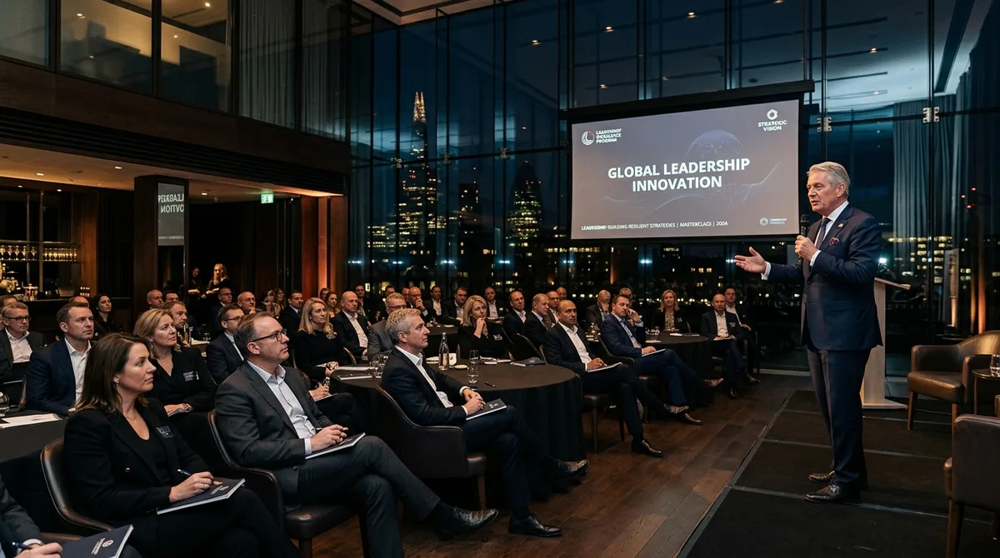

Stackly's portfolio of executive coaching programs is designed to address the distinct challenges, transitions, and ambitions of senior leaders at every stage of their career.


Our flagship coaching engagement for senior leaders and high-potential executives. This deeply personalized program addresses the full spectrum of executive effectiveness — from strategic clarity and leadership presence to emotional intelligence, team influence, and organizational impact.
Designed for VPs, SVPs, and C-1 leaders preparing for C-Suite roles — or senior executives seeking a significant uplift in their leadership performance.

Purpose-built for CEOs, CFOs, COOs, and other C-Suite executives who operate at the highest levels of organizational leadership. This elite program addresses the unique demands of top-tier leadership — board relationships, investor communication, organizational culture, and strategic legacy.
Confidential, senior, and structured for leaders who require a trusted adviser capable of engaging at the most sophisticated levels of strategic challenge.

An intensive, targeted coaching program for executives seeking to optimize their personal effectiveness, resilience, and peak performance. This engagement focuses on the behavioral, cognitive, and psychological dimensions of high-stakes leadership performance.
Ideal for executives managing significant pressure, navigating high-complexity environments, or seeking to break through performance plateaus that have limited their career trajectory.

Specialized coaching for executives navigating major career or leadership transitions: a first CEO appointment, a move into a new industry, a board directorship, an international leadership role, or a return from significant personal disruption.
The first 90-180 days of any senior transition define the trajectory of an entire tenure. Our transition coaching is designed to accelerate time-to-impact, build critical stakeholder relationships, and establish leadership authority from day one.
Not sure which program is right for you? Schedule a complimentary discovery consultation with our senior coaching team to identify the program best aligned to your leadership context and ambitions.